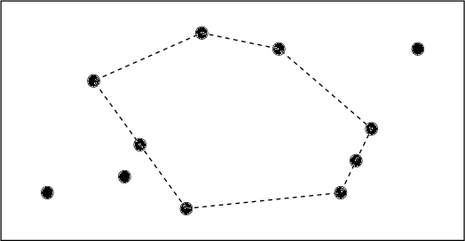

The annual picnic of the Zeron company will take place tomorrow. This year they have agreed on
the Gloomwood park as the place to be. The girl responsible for the arrangement, Lilith, thinks
it would be nice if everyone is able to watch everyone else during the occasion. From geometry
class she remembers that a region in the plane with the property that a straight line between any
two points in the region, lies entirely in the region, is called convex. So that is what she is looking
for. Unfortunately, this seems hard to fulfil, since Gloomwood has many opaque obstacles, such
as large trees, rocks, and so on.
Owing to the fact that the staff of the Zeron company is pretty large, Lilith has a rather intricate
problem to solve: finding a location to hold them all. Therefore, some of her friends help her
to draw a map of the whereabouts of the largest obstacles. To mark out the place, she will use
a ribbon stretched around the obstacles on the circumference of the chosen region. The opaque
obstacles should be thought of as points of zero extension.

The Gloomwood park from above with black dots representing obstacles.
The picnic area is the
region whose circumference is dashed.
The first line of the input contains a single positive integer n, specifying the number of test
scenarios to follow. Each test scenario begins with a line containing an integer m, the number of
obstacles in the park (
2 < m < 100). The next line contains the coordinates of the m obstacles,
in the order
x1 y1 x2 y2 x3 y3.... All coordinates are integers in the
range [0, 1000]. Each
scenario has at least three obstacles that are not on a straight line, and no two obstacles have the
same coordinates.
For each test scenario, one line of output should be generated, stating the area with one decimal
of the largest convex polygon having obstacles as corners, but no enclosed obstacles.
1
11
3 3 8 4 12 2 22 3 23 5 24 7 27 12 18 12 13 13 6 10 9 6
129.0